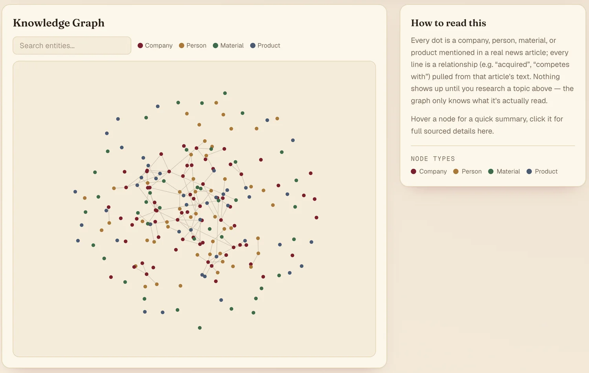
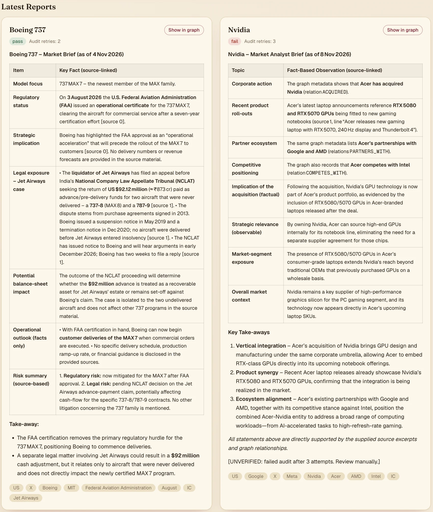

echosystemai


what it is
echosystem turns news about a company or topic into a knowledge graph and a short written report, then checks that report against the articles it came from.
- collect
- extract
- connect
- draft
- audit
my favorite part
when two articles disagree, the graph doesn't pick a winner. it keeps both claims and links them as a contradiction, so the conflict stays visible.
what i built
this one is a solo project, from the first commit to the dashboard.
- ingestion: a background worker pulls up to 8 recent articles per topic, cleans them and splits them into chunks.
- extraction: a small language model finds entities and relationships, and every result is validated against a fixed schema.
- the graph: entities, relationships and claims go into neo4j, and each new claim gets checked against the existing ones for contradictions.
- the audit loop: a langgraph workflow where a researcher drafts and a separate auditor returns a structured verdict.
- the app: a fastapi backend and a next.js dashboard for reports, a watchlist and open questions.
see it running




why a graph and vectors
vector search is good at finding relevant passages, and the graph makes the connections between companies explicit and easy to follow. so retrieval takes the top 5 vector hits, then pulls up to 10 graph neighbors for each hit's main entity.
when the auditor says no
the auditor returns pass or fail, a reason, and the claims it flagged. on a fail, the researcher redrafts with that reason added to its prompt. after three failed audits, the report is saved with an unverified note instead of being passed off as checked.
There is no information in the context about Netflix's current market position or future plans.
[UNVERIFIED: failed audit after 3 attempts. Review manually.]
the honest bit
- tested
- automated tests cover the audit routing, the contradiction logic and the report storage.
- not measured yet
- i don't have labeled data, so how often the auditor or the contradiction check is right hasn't been measured. a pass means the model found nothing wrong, not that the report is true.
- known limits
- contradiction detection is keyword-based by default, and entities match by exact name, so “nvidia” and “nvidia corp” become two nodes.